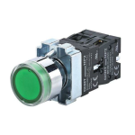
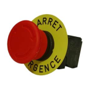
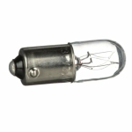
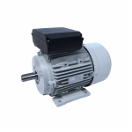
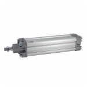

The hose under the tank must be connected to the tank.
The valve under the tank must be closed.
When the hoses are empty, no liquid enters the syringe of the filling station.
The hoses must be drained, .
The valve must be closed.
The hoses must be drained,.
|
Fault
|
Cause
|
Solution
|
| Production stops without user intervention. | Bottle jam on the output conveyor. | Remove bottles from the output conveyor (See). |
| No bottle on the infeed conveyor. | Feed bottles onto the input conveyor (See). | |
| Production does not stop when there are no more empty bottles on the input conveyor. | Dirty optical sensor. | Clean the optical sensor. |
| Faulty optical sensor. | Replace the optical sensor. | |
| Production does not stop when there is a load jam on the output conveyor. | Faulty capacitive sensor. | Replace the capacitive sensor. |
| The EN SERVICE (In service) indicator light does not light up. | Faulty bulb. | Replace the bulb (). |
| The DEFAUT indicator does not turn on | Faulty bulb | Replace the bulb (). |
The machine must be powered off.
A white plastic disc is placed inside the colored cap.
The caps are fragile; screw carefully.
The machine must be powered off.
A white plastic disc is placed inside the colored cap.
The caps are fragile; screw carefully.
 |
EN SERVICE (In service)
illuminated button
Ref
6348254
|
 |
ARRET D'URGENCE
(Emergency Stop) button
Ref
6348254
|
 |
Bulb
Ref 6348254
|
 |
Motor
Ref
6348254
|
|
Sensor
Ref
6348254
|
|
 |
Actuator
Ref 6348254
|
For further information, please contact:
RAVOUX AUTOMATISMES
Rue de l’industrie - ZI Vichy Rhue
03300 CREUZIER LE VIEUX
+33 470 974 862